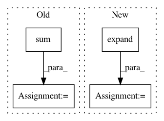

093aca082e2878f3a28defe9075e7334dfceac70,test/distributions/test_distributions.py,TestDistributionShapes,test_one_hot_categorical_shape,#TestDistributionShapes#,3181
Before Change
self.assertEqual(dist._event_shape, torch.Size((2,)))
self.assertEqual(dist.sample().size(), torch.Size((3, 2)))
self.assertEqual(dist.sample((3, 2)).size(), torch.Size((3, 2, 3, 2)))
simplex_sample = self.tensor_sample_1 / self.tensor_sample_1.sum(-1, keepdim=True)
self.assertEqual(dist.log_prob(simplex_sample).size(), torch.Size((3,)))
self.assertRaises(ValueError, dist.log_prob, self.tensor_sample_2)
self.assertEqual(dist.log_prob(dist.enumerate_support()).size(), torch.Size((2, 3)))
simplex_sample = torch.ones(3, 1, 2) / 2
After Change
self.assertEqual(dist.sample().size(), torch.Size((3,)))
self.assertEqual(dist.sample((3, 2)).size(), torch.Size((3, 2, 3)))
self.assertRaises(ValueError, dist.log_prob, self.tensor_sample_1)
sample = torch.tensor([0., 1., 0.]).expand(3, 2, 3)
self.assertEqual(dist.log_prob(sample).size(), torch.Size((3, 2,)))
self.assertEqual(dist.log_prob(dist.enumerate_support()).size(), torch.Size((3,)))
sample = torch.eye(3)
self.assertEqual(dist.log_prob(sample).size(), torch.Size((3,)))
In pattern: SUPERPATTERN
Frequency: 4
Non-data size: 4
Instances
Project Name: pytorch/pytorch
Commit Name: 093aca082e2878f3a28defe9075e7334dfceac70
Time: 2021-01-05
Author: fritz.obermeyer@gmail.com
File Name: test/distributions/test_distributions.py
Class Name: TestDistributionShapes
Method Name: test_one_hot_categorical_shape
Project Name: cornellius-gp/gpytorch
Commit Name: f76a4dabb4cd38ee58d01a35c5b511e224d060d2
Time: 2018-09-17
Author: gpleiss@gmail.com
File Name: gpytorch/lazy/sum_batch_lazy_tensor.py
Class Name: SumBatchLazyTensor
Method Name: _matmul
Project Name: cornellius-gp/gpytorch
Commit Name: b0eecef1c8acdfe6e65f1e96ff6e26d2bc43e7db
Time: 2018-11-09
Author: balandat@fb.com
File Name: gpytorch/lazy/diag_lazy_tensor.py
Class Name: DiagLazyTensor
Method Name: _quad_form_derivative
Project Name: rusty1s/pytorch_geometric
Commit Name: b48c943b9f6248dbdd42d0fce44658b937098372
Time: 2017-10-23
Author: matthias.fey@tu-dortmund.de
File Name: torch_geometric/nn/functional/spline_gcn.py
Class Name:
Method Name: spline_gcn